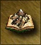

| Артефакт | Опис |
|---|---|
Сокира кентавра |
Ефект: +2 до атаки Ціна: 2000 Клас: Скарби |
Блискавка мертвого лицаря |
Ефект: +3 до атаки Ціна: 3000 Клас: Маніяк |
Кистень великого гнола |
Ефект: +4 до атаки Ціна: 4000 Клас: Маніяк |
Язики полум'я червоного дракона |
Ефект: +2 до атаки та захисту Ціна: 5000 Клас: Маніяк |
Караюча дубина огра |
Ефект: +5 до атаки Ціна: 5000 Клас: Великий |
Меч пекельного полум'я |
Ефект: +6 до атаки Ціна: 10000 Клас: Реліквія |
Гладіус титана |
Ефект: +12 до атаки, -3 до захисту Ціна: 20000 Клас: Реліквія |
Меч правосуддя |
Ефект: +5 до всіх характеристик Ціна: 20000 Клас: Реліквія |
Щит короля гномів |
Ефект: +2 до захисту Ви знайшли цей міцний щит у покинутій гномській шахті. Він все ще зберігає магічні властивості колишніх власників. Ціна: 2000 Клас: Скарбниця |
Щит тоскуючих мертвеців |
Ефект: +3 до захисту Щит, присвячений культу Смерті, видає зловісний гул, коли його береш до рук. Ціна: 3000 Клас: Малий |
Щит короля гнолів |
Ефект: +4 до захисту Кам’яний щит у формі голови гобліна. Він виглядає міцним, хоча має деякі тріщини. Ціна: 4000 Клас: Малий |
Щит лютості огра |
Ефект: +5 до захисту Щит, покритий шрамами битв, що належав могутньому огру. Ціна: 5000 Клас: Великий |
Щит проклятих |
Ефект: +6 до захисту Легендарний щит, який викликає жах у ворогів. Ціна: 6000 Клас: Великий |
Щит з луски дракона |
Ефект: +3 до захисту, +3 до атаки Створений із луски червоного дракона, цей щит міцний та вогнестійкий. Ціна: 6000 Клас: Великий |
Щит вартового |
Ефект: +12 до захисту, +3 до атаки Древній щит, що слугував століттями охоронцям великих міст. Ціна: 10000 Клас: Реліквія |
Щит лев’ячої хоробрості |
Ефект: +4 до всіх характеристик Щит, яким користувалися найславетніші герої у битвах проти темних сил. Ціна: 16000 Клас: Реліквія |
Шолом Білого єдинорога |
Ефект: +1 до знання Ціна: 1000 Клас: Скарбниця |
Шолом-череп |
Ефект: +3 до знання Ціна: 3000 Клас: Малий |
Шолом Хаосу |
Ефект: +4 до знання Ціна: 4000 Клас: Малий |
Корона верховного мага |
Ефект: +4 до знання Ціна: 5000 Клас: Великий |
Шолом сатанинської вірності |
Ефект: +5 до знання Ціна: 6000 Клас: Великий |
Корона із зубів дракона |
Ефект: +4 до знання, +2 до сили магії Ціна: 8000 Клас: Великий |
Шолом морського капітана |
Ефект: +7 до знання Ціна: 30000 Клас: Реліквія |
Шапка чаклуна |
Ефект: Всі заклинання 5 рівня Ціна: 30000 Клас: Реліквія |
Шолом небесного громовержця |
Ефект: +10 до знання, -2 до сили магії Ціна: 12000 Клас: Реліквія |
Шолом небесного просвітлення |
Ефект: +6 до всіх характеристик Ціна: 24000 Клас: Реліквія |
Амулет безпристрасності |
Ефект: Загони героя невразливі до закляття Берсерк. Ціна: 1000 Клас: Скарб Ви чуєте звуки бою і бачите битву варвара з гідрою. Ви допомагаєте воїну та отримуєте від нього амулет. |
Кулон вільної волі |
Ефект: Загони героя невразливі до закляття Гіпноз. Ціна: 1000 Клас: Скарб Ви виграли у торговця боротьбу на пальцях і заволоділи магічним амулетом. |
Кулон життя |
Ефект: Загони героя невразливі до закляття Хвиля Смерті. Ціна: 2500 Клас: Скарб Ви знаходите схований вхід у гробницю і всередині — золотий ланцюжок. |
Кулон смерті |
Ефект: Загони героя невразливі до закляття Знищити нечисть. Ціна: 2500 Клас: Скарб Перемігши некроманта, ви забираєте його магічний амулет. |
Кулон передбачення |
Ефект: Загони героя невразливі до закляття Сліпота. Ціна: 5000 Клас: Великий Ви допомагаєте старій сліпій жінці та отримуєте кулон, що дозволяє бачити навіть із закритими очима. |
Кулон святості |
Ефект: Загони героя невразливі до закляття Прокляття. Ціна: 1000 Клас: Скарб Відлюдник благословляє вас і дарує амулет, що захищає від проклять. |
Кулон абсолютної пам’яті |
Ефект: Загони героя невразливі до закляття Забуття. Ціна: 3000 Клас: Скарб Ви знаходите амулет поряд із рештками спаленої відьми. |
Кулон негативу |
Ефект: Загони героя невразливі до Удару блискавки та Ланцюгової блискавки. Ціна: 5000 Клас: Великий Ви знаходите амулет серед руїн хатини, спаленої блискавкою. |
Магічний нашийник |
Ефект: Заклинання героя тривають на 1 хід довше. Ціна: 500 Клас: Скарб Ви знаходите золотий нашийник у левітуючій скрині. |
Кольє неприступності |
Ефект: +5% до Супротиву. Ціна: 2000 Клас: Великий Ви рятуєте паладина від некроманта та отримуєте за це цей амулет. |
Медаль чиновника |
Ефект: Знижує ціну викупу героя. Ціна: 5000 Клас: Великий Ви допомагаєте послу з ремонтом карети та отримуєте медаль. |
Ожерелье морського провидця |
Ефект: +1000 до переміщення морем. Ціна: 10000 Клас: Великий Ви рятуєте капітана від огрів, і він дарує вам магічне ожерелье. |
Ожерелье божественної благодаті |
Ефект: +3 до всіх характеристик. Ціна: 12000 Клас: Реліквія Ви рятуєте чарівницю, і вона дарує вам це дорогоцінне ожерелье. |
Нагрудник із закам'янілого дерева |
Ефект: +1 до сили магії. Ціна: 1000 Клас: Скарб Шматок мармурового кольору серед застиглої хвилі. Розглянувши їх, ви зауважуєте, що вам обернулась страшною вагою. |
Ребра |
Ефект: +2 до сили магії. Ціна: 3000 Клас: Скарб Ви знаходите цілу грудну клітку якогось гігантського звіра. Пильніше розглянувши її, ви здогадуєтесь, що це не просто кістки, а магічний артефакт. |
Кальчуга великого василіска |
Ефект: +3 до сили магії. Ціна: 4000 Клас: Малий Ви зустрічаєте старого травника, який твердить, що десь знайдено ці лусочки. Ви отримуєте їх, сподіваючись, що вони нададуть незвичайну силу власнику. |
Туніка короля циклопів |
Ефект: +4 до сили магії. Ціна: 5000 Клас: Малий Ви знаходите захопленого циклопами правителя, що тримає цю туніку. Пізніше ви дізнаєтеся, що вона магічна. |
Доспех виверниного володаря |
Ефект: +5 до сили магії. Ціна: 6000 Клас: Величний Ви знаходите обладунок, що належав старому володарю виверн. Він все ще несе у собі залишки сили, що колись належала могутньому магу. |
Доспех із чорної драконової шкіри |
Ефект: +6 до сили та захисту. Ціна: 8000 Клас: Реліквія Ви знаходите старого коваля, який розповідає легенду про ці обладунки. Ви розумієте, що це надзвичайно цінний артефакт. |
Кіраса титанів |
Ефект: +10 до сили магії, -2 до знань. Ціна: 10000 Клас: Реліквія Ви знаходите обладунок титана серед руїн. Він випромінює потужну магічну енергію, і ви відчуваєте, що це неймовірно сильний артефакт. |
Магічне сяйво |
Ефект: +1 до всіх характеристик. Ціна: 4000 Клас: Скарб Випадково ви знаходите загадкове світіння. Після того, як ви торкаєтесь його, воно вбирається у ваші обладунки, наділяючи їх магічною силою. |
Сапоги-скороходи |
Ефект: Збільшують дальність пересування героя по суші на 600 очок (400 в HotA). Ціна: 6000 Клас: Малий Під час зустрічі з місцевим мудрецем ви розповідаєте йому про цілі вашої подорожі. Він відкриває свою скриню й дістає звідти пару дивних черевиків, які потім передає вам. |
Сапоги левітації |
Ефект: Дозволяють долати водні перешкоди. Ціна: 10000 Клас: Реліквія Під час зустрічі з місцевим мудрецем ви розповідаєте йому про цілі вашої подорожі. Він відкриває свою скриню й дістає звідти пару дивних черевиків, які потім передає вам. |
Сапоги полярності |
Ефект: Підвищують ефективність навику Спротив на 15%. Ціна: 6000 Клас: Великий Ви допомагаєте торговцю-погоничу позбутися нападу гоблінів. На знак подяки він дарує вам пару майстерно зроблених сапогів із дуже м’якої шкіри. Придивившись, ви помічаєте на них стародавні руни. |
Сапоги мерця |
Ефект: Підвищують ефективність навику Некромантія на 15%. Ціна: 6000 Клас: Великий Ви знаходите пару вишукано оздоблених сапогів. Згадуючи добре слово невідомого покровителя, ви забираєте їх із собою. |
Поножі з кості дракона |
Ефект: +1 до сили магії та знань. Ціна: 2000 Клас: Середній Ви натрапляєте на кістки великої істоти, схоже на дракона. Роздивившись ближче, ви розумієте, що це не просто кості, а наголінники. |
Сандалії святого |
Ефект: +2 до всіх характеристик. Ціна: 8000 Клас: Реліквія Ви допомагаєте торговцю-погоничу позбутися нападу гоблінів. На знак подяки він дарує вам пару дивовижних сандалій. |
Плащ із крила дракона |
Ефект: +2 до сили магії та знань. Ціна: 4000 Клас: Малий За визволення архієпископа від злого дракона, який полював на лицарів, ви отримуєте плащ із крила дракона як нагороду. |
Туніка рівноваги |
Ефект: Збільшує ефективність навички Спротив на 10%. Ціна: 4000 Клас: Великий Ви стали свідком битви між паладином і некромантом. Після перемоги, паладин дарує вам цю туніку в знак вдячності. |
Мантія вампіра |
Ефект: Збільшує ефективність навички Некромантія на 10%. Ціна: 4000 Клас: Малий Ви знаходите покинуте житло вампіра. Серед старих речей — мантія, просочена темною магією. |
Накидка швидкості |
Ефект: Збільшує швидкість всіх юнітів героя на 2. Ціна: 10000 Клас: Реліквія Легенди кажуть, що цю накидку колись носив сам Вітер. Тепер вона ваша. |
Магічна накидка |
Ефект: Збільшує тривалість дії заклинань героя на 2 раунди. Ціна: 1500 Клас: Скарб Ви знаходите скляну скриньку, що ширяє в повітрі. Усередині — ця накидка. |
Стрічка посла |
Ефект: Зменшує ціну викупу героя з армією при здачі ворогу. Ціна: 5000 Клас: Великий Ви допомогли послу завершити важливу місію. На знак вдячності він дарує вам чарівну стрічку. |
Плащ нескінченних кристалів |
Ефект: Щодня приносить один кристал у казну королівства. Ціна: 5000 Клас: Великий Ви знаходите джерело, з якого безперервно б'ють кристали. З цього джерела було зроблено тканину для плаща. |
Плащ зречення |
Ефект: Забороняє клонування, чаклунство та заклинання для ворожих героїв під час бою. Ціна: 10000 Клас: Реліквія Ви миттєво вбиваєте вороже заклинання за допомогою цього таємничого плаща. |
Крила ангела |
Ефект: Дають можливість герою літати по карті, ігноруючи рельєф місцевості. Ціна: 20000 Клас: Реліквія Ви підноситесь у небо, отримавши ці крила від самого небесного покровителя. |
Непорушне око дракона |
Ефект: +1 до атаки та захисту. Ціна: 2000 Клас: Скорочене В одній із занедбаних хатинок ви знаходите скелет давно померлої відьми. Після ретельнішого огляду ви виявляєте перстень з оком дракона. |
Застигле око дракона |
Ефект: +1 до бойового духу та вдачі. Ціна: 2000 Клас: Скорочене В одній із занедбаних хатинок ви знаходите скелет давно померлої відьми. Після ретельнішого огляду ви виявляєте перстень з оком дракона. |
Кільце життя |
Ефект: Збільшує показник здоров'я всіх юнітів армії героя на 1 од. Ціна: 5000 Клас: Малий Під час привалу ви помічаєте, як рись намагається дістатися до гнізда ворон на дереві. Ви сміливо видираєтесь на дерево і проганяєте хижака. В гнізді знаходите кілька блискучих камінців і перстень. |
Кільце життєвої сили |
Ефект: Збільшує показник здоров'я всіх юнітів армії героя на 1 од. Ціна: 5000 Клас: Скорочене Під час привалу ви помічаєте, як рись намагається дістатися до гнізда ворон на дереві. Ви сміливо видираєтесь на дерево і проганяєте хижака. В гнізді знаходите кілька блискучих камінців і перстень. |
Кільце мандрівника |
Ефект: Збільшує швидкість усіх загонів армії героя на 1 од. Ціна: 5000 Клас: Середній Зустрівши місцевого мешканця, ви розповідаєте йому про свою місію. Він запрошує вас до хати і дарує амулет — кільце мандрівника, що залишилось йому у спадок від батька. |
Магічне кільце |
Ефект: Подовжує дію заклять героя на 2 ходу. Ціна: 5000 Клас: Великий У лісі ви натрапляєте на загублений вівтар давнього мага. Досліджуючи руїни, ви знаходите таємний сховок із кільцем, яке досі пульсує магією. |
Кільце коштовних каменів |
Ефект: Щодня приносить до скарбниці королівства один самоцвіт. Ціна: 5000 Клас: Великий Ви чуєте крик про допомогу і знаходите кентавра, що потрапив у пастку. Вдячний за порятунок, він дарує вам мішечок із коштовним кільцем. |
Вічне кільце сірки |
Ефект: Щодня приносить до скарбниці королівства 1 од. сірки. Ціна: 5000 Клас: Великий Ви зустрічаєте алхіміка, який, дізнавшись про ваш похід, вирішує приєднатися. Він дарує вам кільце сірки, яке має допомогти в битвах. |
Кільце дипломата |
Ефект: Зменшує вартість викупу героя з полону ворога. Ціна: 5000 Клас: Великий На привалі ви зустрічаєте купця, що втратив усе майно. Попри це, він дарує вам кільце дипломата, сподіваючись, що воно допоможе вам у переговорах. |
Рукавиці вершника |
Ефект: Збільшують дальність пересування героя по суші на 300 (200 в HotA). Ціна: 3000 Клас: Малий Під час подорожі ви зупиняєтесь на постоялому дворі поблизу кордону. Там ви знаходите таємничу річ, що виявляється джерелом ваших нових здібностей. |
| Лук з вишневого дерева |
Ефект: Збільшує ефективність навички Стрільба на 5%. Ціна: 2000 Під час випадкової зустрічі з відомим лучником закінчується змагання з боротьби на пальцях. На кону ставиться його лук. Ви перемагаєте. |
| Тетива з гриви єдинорога |
Ефект: Збільшує ефективність навички Стрільба на 10%. Ціна: 4000 Ви знаходите єдинорога, що потрапив у пастку. Намагаючись заспокоїти налякану тварину, ви звільняєте її, і вона миттєво зникає з поля зору. Ви помічаєте, що на місці єдинорога залишилася чудова тетива для лука. |
| Стріли з ангельського пір'я |
Ефект: Збільшує ефективність навички Стрільба на 15%. Ціна: 6000 Ви мучитеся докорами сумління з приводу грабежу могили, але пір'я, використане для виготовлення цих стріл, ви берете з собою і швидко покидаєте це місце. |
| Золотий лук |
Ефект: Дозволяє стрільцям вести вогонь по цілях без штрафів. Відстань і різні перешкоди ігноруються. Ціна: 8000 Випадкова зустріч з відомим лучником закінчується змаганням з боротьби на пальцях. На кону ставиться його лук. Ви перемагаєте. |
| Птиця проникливості |
Ефект: Збільшує ефективність навички Зоркість на 5%. Ціна: 1000 Стара відьма, яка, здається, очікувала на вашу появу, віддає вам маленьку статуетку і йде, не сказавши ні слова. |
| Стійкий чаклун |
Ефект: Збільшує ефективність навички Зоркість на 10%. Ціна: 2000 Стара відьма, яка, здається, очікувала на вашу появу, віддає вам маленьку статуетку і йде, не сказавши ні слова. |
| Символ життя |
Ефект: Збільшує ефективність навички Зоркість на 15%. Ціна: 3000 Стара відьма, яка, здається, очікувала на вашу появу, віддає вам маленький талісман і йде, не сказавши ні слова. |
| Гліф доблесті |
Ефект: +1 до бойового духу. Ціна: 1000 Ви рятуєте принцесу з сусіднього королівства від работоргівців, за що вона нагороджує вас Гербом Доблесті. |
| Знак відваги |
Ефект: +1 до бойового духу. Ціна: 1000 За звільнення околиць від злісного мінотавра, який розлютився, поївши лицарів, вас нагороджують Знаком Відваги. |
| Медаль мужності |
Ефект: +1 до бойового духу. Ціна: 1000 Ви рятуєте маленького хлопчика від зграї злих вовків і повертаєте його в маєток батьків. Вдячний батько нагороджує вас медаллю мужності. |
| Конюшина удачі |
Ефект: +1 до удачі. Ціна: 1000 Проходячи високим полем, ви з задоволенням виявляєте чотирилисту конюшину, яку, на щастя, не торкнулася пожежа. |
| Карти пророцтва |
Ви зустрічаєте ворожку, який пропонує вам вибрати будь-яку з дивних карт, колоду яких він несе з собою. Коли ви відмовляєтеся, він сам витягує карту. |
| Голуб удачі |
Ефект: +1 до удачі. Стара відьма, яка, здається, очікувала на вашу появу, віддає вам маленьку статуетку і йде, не сказавши ні слова. Ціна: 1000 Клас: Сокровище |
| Дух утиснення |
Ефект: Віднімає у героя і його супротивника на полі бою всі бонуси бойового духу. Під час подорожі ви знаходите руїни древнього міста з кам'яними стінами, де ви знаходите зброю, що знищила його Дух Утиснення. Ціна: 2000 Клас: Сокровище |
Пісочний час недоброго часу |
Ефект: Віднімає у героя і його супротивника на полі бою всі бонуси удачі. З кожним поворотом ви натикаєтеся на страшну картину поля бою з розірваними кістками, поїденими хижаками. Ви оглядаєте речі загиблих і знаходите пісочний годинник. Ціна: 3000 Клас: Сокровище |
| Амулет мани |
Ефект: Додатково відновлює 1 запас мани в день. Ви зустрічаєте караван циган, які влаштували бенкет. П'яні, вони підзивають вас і говорять: "Якщо ти зможеш станцювати Рома-Буту, то ми нагородимо тебе!" Цей танець вам невідомий, але ви все одно намагаєтеся щось зобразити. Всі сміються, але за сміливість ви отримуєте дивний амулет. Ціна: 500 Клас: Покровище |
| Талісман мани |
Ефект: Додатково відновлює 2 запаси мани в день. Ви зустрічаєте караван циган, які влаштували бенкет. П'яні, вони підзивають вас і говорять: "Якщо ти зможеш станцювати Рома-Буту, то ми нагородимо тебе!" Цей танець вам невідомий, але ви все одно намагаєтеся щось зобразити. Всі сміються, але за сміливість ви отримуєте дивний талісман. Ціна: 1000 Клас: Сокровище |
| Волшебна сфера |
Ефект: Додатково відновлює 3 запаси мани в день. Ви зустрічаєте караван циган, які влаштували бенкет. П'яні, вони підзивають вас і говорять: "Якщо ти зможеш станцювати Рома-Буту, то ми нагородимо тебе!" Цей танець вам невідомий, але ви все одно намагаєтеся щось зобразити. Всі сміються, але за сміливість ви отримуєте дивну сферу. Ціна: 1900 Клас: Сокровище |
| Книга магії Повітря |
Ефект: Додає всі заклинання Магії Повітря в книгу героя. Ви зустрічаєте фокусника, який вмовляє вас взяти його з собою, щоб бути в безпеці. Ви погоджуєтеся, і він віддає вам в якості оплати копію Книги Елементів. Ціна: 20000 Клас: Релікт |
| Книга магії Води |
Ефект: Додає всі заклинання Магії Води в книгу героя. Ви зустрічаєте фокусника, який вмовляє вас взяти його з собою, щоб бути в безпеці. Ви погоджуєтеся, і він віддає вам в якості оплати копію Книги Елементів. Ціна: 20000 Клас: Релікт |
| Книга магії Землі  |
Ефект: Додає всі заклинання Магії Землі в книгу героя. Ви зустрічаєте фокусника, який вмовляє вас взяти його з собою, щоб бути в безпеці. Ви погоджуєтеся, і він віддає вам в якості оплати копію Книги Елементів. Ціна: 20000 Клас: Релікт |
| Книга магії Вогню |
Ефект: Додає всі заклинання Магії Вогню в книгу героя. Ви зустрічаєте фокусника, який вмовляє вас взяти його з собою, щоб бути в безпеці. Ви погоджуєтеся, і він віддає вам в якості оплати копію Книги Елементів. Ціна: 20000 Клас: Релікт |
| Сфера небесного |
Ефект: Додає 50% сили всім заклинанням Магії повітря. Ви зустрічаєте фокусника, який вмовляє вас взяти його з собою, щоб бути в безпеці. Ви погоджуєтеся, і він віддає вам в якості оплати таємничу Сферу. Ціна: 6000 Клас: Релікт |
| Сфера проливного дощу |
Ефект: Збільшує руйнівну силу заклинань Магії Води на 50%. Ви зустрічаєте фокусника, який вмовляє вас взяти його з собою, щоб бути в безпеці. Ви погоджуєтеся, і він віддає вам в якості оплати таємничу Сферу. Ціна: 6000 Клас: Великий |
| Сфера илистого озера |
Ефект: Збільшує руйнівну силу заклинань Магії Землі на 50%. Ви зустрічаєте фокусника, який вмовляє вас взяти його з собою, щоб бути в безпеці. Ви погоджуєтеся, і він віддає вам в якості оплати таємничу Сферу. Ціна: 6000 Клас: Великий |
| Сфера бушуючого вогню |
Ефект: Збільшує руйнівну силу заклинань Магії Вогню на 50%. Ви зустрічаєте фокусника, який вмовляє вас взяти його з собою, щоб бути в безпеці. Ви погоджуєтеся, і він віддає вам в якості оплати таємничу Сферу. Ціна: 6000 Клас: Великий |
| Сфера вразливості |
Ефект: Нейтралізує природний опір магії всіх істот на полі бою. Ви зустрічаєте свого старого друга - волшебника. Він дарує вам подарунок: шар, що дозволяє впливати на створіння, які зазвичай не сприйнятливі до магії. Ціна: 25000 Клас: Релікт |
| Сфера постійності |
Ефект: Наділяє загони армії героя несприйнятливістю до зняття заклинань. Ви зустрічаєте свого старого друга - волшебника. Він дарує вам подарунок: шар, що дозволяє захистити ваших людей від дії заклинання "Зняття заклинань". Ціна: 7500 Клас: Великий |
| Сфера заборони |
Ефект: Повністю забороняє використання заклинань на полі бою як самому герою, так і його противнику. Ви допомагаєте селянину зловити втікаючого коня. На знак подяки він дарує вам маленький шар. Як тільки ви доторкаєтеся до нього, ви відчуваєте, що ваші магічні сили покидають вас. Ціна: 20000 Клас: Релікт |
| Підзорна труба |
Ефект: Збільшує радіус огляду героя на 1 клітинку карти. Старик-винахідник пропонує вам спробувати його останню розробку. Він називає його ... Підзорна Труба. Ціна: 1000 Клас: Сокровище |
| Телескоп |
Ефект: Збільшує радіус огляду героя на 1 клітинку карти. Торговець з далеких країн продає вам новий винахід свого народу, допомагаючий при подорожах. Він дозволяє візуально наближати віддалені об'єкти. Він називає його ... Телескоп. Ціна: 1000 Клас: Сокровище |
| Ноги Легіонера |
Ефект: Збільшує прирост юнітів 2-го рівня на 5 в тиждень (при цьому герой повинен знаходитися в місті в останній день тижня). Обискивая руїни, ви з подивом виявляєте частину Статуї Легіона. Ви акуратно змахуєте з неї пил перед тим, як покласти її в ваш мішок. Ціна: 5000 Клас: Сокровище |
| Поясниця Легіонера |
Ефект: Збільшує прирост юнітів 3-го рівня на 4 в тиждень (при цьому герой повинен знаходитися в місті в останній день тижня). Обискивая руїни, ви з подивом виявляєте частину Статуї Легіона. Ви акуратно змахуєте з неї пил перед тим, як покласти її в ваш мішок. Ціна: 5000 Клас: Малий |
| Торс Легіонера |
Ефект: Збільшує прирост юнітів 4-го рівня на 3 в тиждень (при цьому герой повинен знаходитися в місті в останній день тижня). Обискивая руїни, ви з подивом виявляєте частину Статуї Легіона. Ви акуратно змахуєте з неї пил перед тим, як покласти її в ваш мішок. Ціна: 5000 Клас: Малий |
| Руки Легіонера |
Ефект: Збільшує прирост юнітів 5-го рівня на 2 в тиждень (при цьому герой повинен знаходитися в місті в останній день тижня). Обискивая руїни, ви з подивом виявляєте частину Статуї Легіона. Ви акуратно змахуєте з неї пил перед тим, як покласти її в ваш мішок. Ціна: 5000 Клас: Великий |
| Голова Легіонера |
Ефект: Збільшує прирост юнітів 6-го рівня на 1 в тиждень (при цьому герой повинен знаходитися в місті в останній день тижня). Обискивая руїни, ви з подивом виявляєте частину Статуї Легіона. Ви акуратно змахуєте з неї пил перед тим, як покласти її в ваш мішок. Ціна: 5000 Клас: Великий |
Склянка життєвої сили |
Ефект: Збільшує показник здоров'я всіх юнітів армії героя на 2 од. В гущі дерев ви знаходите таємничу усыпальницю. В повітрі над вівтарем висить чаша, в якій нібито знаходиться кров життя. Ви акуратно забираєте її, намагаючись не привертати до себе додаткової уваги. Ціна: 10000 Клас: Великий |
| Окови війни |
Ефект: Не дозволяє героям - як підконтрольному, так і ворожому - втекти з поля бою. Під час дослідження руїн стародавнього міста з фортечними стінами ви знаходите зброю, що знищила його - Окови Війни. Ціна: 5000 Клас: Великий |
| Невичерпна мошна золота |
Ефект: Щодня приносить в казну королівства 500 золотих. Ви виявляєте лепрекона, який радісно танцює навколо чарівного мішка. Побачивши вас, йому нічого не залишається, крім втечі. Ви забираєте мішок. Ціна: 5000 Клас: Великий |
| Невичерпна сума золота |
Ефект: Щодня приносить в казну королівства 750 золотих. Жінка зі знатного роду, яка відстала від своїх супутників, просить вас допомогти їй дістатися до будинку. В кінці вашої подорожі вона вручає вам мішок із золотом. Ціна: 7500 Клас: Великий |
| Невичерпний мішок золота |
Ефект: Щодня приносить в казну королівства 1000 золотих. Ви знаходите шкіряний гаманець, набитий золотом. Пізніше ви дізнаєтеся, що він належав великому королю-воїну, який міг перетворити будь-який предмет в золото. Ціна: 10000 Клас: Релікт |
| Невичерпна підвода деревини |
Ефект: Щодня приносить в казну королівства 1 од. деревини. Ви зупинилися на привал і розпалили вогнище. Підкладаючи дрова з підводи, що опинилася поблизу, ви виявляєте, що вони з'являються там знову і знову. Ви забираєте з собою цю корисну магічну річ. Ціна: 5000 Клас: Малий |
| Невичерпна підвода з рудою |
Ефект: Щодня приносить в казну королівства 1 од. руди. Ви знаходите гоблінську кузню, в якій роблять зброю для війни з людьми. Ви нападаєте на їхній табір і заволодіваєте чарівною точкою, в якій ніколи не закінчується руда. Ціна: 5000 Клас: Малий |
| Невичерпна склянка ртуті |
Ефект: Щодня приносить в казну королівства 1 од. ртуті. При короткому огляді вежі чарівника, яку чомусь залишили без нагляду, ви знаходите колбу з ртуттю, в якій завжди залишається трохи рідини на дні. Розуміючи всю цінність цієї речі, ви забираєте її з собою. Ціна: 5000 Клас: Великий |
| Свиток заклинання |
Ефект: Дозволяє герою використовувати в бою те випадкове заклинання, яке записано в свитку. Ви знаходите тубус зі свитком всередині. Руни на тубусі дуже стародавні, а зшитий він із дивовижним мистецтвом. Витягнувши свиток, ви відчуваєте, як вас наповнює магічна сила. Ціна: 2500 Клас: Особливий |